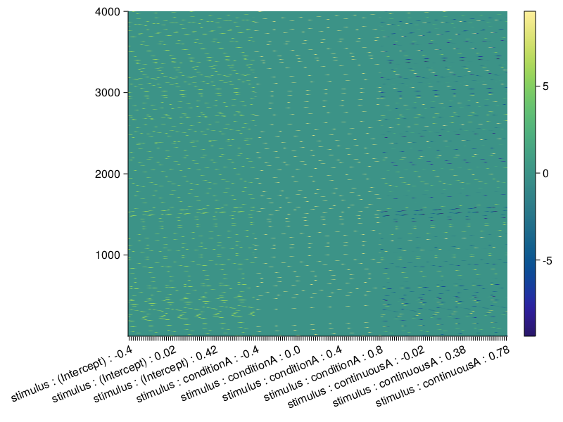

Show out of Bounds Label
When visualizing a designmatrix it can happen that the labels on the y-axis get cut off towards the left (especially if they are quite long). In the following we discuss a possible quick fix for this problem.
Here we start off with the "label-limited" timeexpanded designmatrix from the corresponding How To section that details how it can be generated.
plot_designmatrix(designmatrix!(ufCont,evts),cDesign;setExtraValues=(xTicks=10, sortData=false))#
While the plot automatically sets it's height accoring to the labels, they are cut off on the left side.
A quick fix would be to place an empty plot to the left of the designmatrix.
By creating your own figure with Makie.Figure, and then only giving a certain grid position to the designmatrix we get white space next to the plot.
The plot! function inside the plot config instance can take any grid position, and the figure f will include plot and sufficient white space next to it.
The exact numbers in the grid position can be guessed from the ratio of the overlap, or just tried out.
f = Figure()
plot_design(f[1,2:6],designmatrix!(ufCont,evts),cDesign;setExtraValues=(xTicks=10, sortData=false))
f#